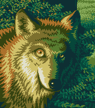

This is the personal web site of Kyrylo Silin. He lives in the
city of Kharkiv, Ukraine. On the internet he is known
as kyrylo. Kyrylo likes programming and computer
science, web design and typography, digital painting and
computer graphics, football and bicycles.

kyrylo
This picture represents Kyrylo Silin’s public persona. But did you know
that he also has a real face?
I’m yet to build my big project. I enjoy to learn new
stuff. I appreciate open source and write Ruby and JavaScript.
I’m learning C and hope to learn OCaml one fine
day. I’m a core member of the Pry REPL team. I have a
bunch of unfinished projects. Currently, I don’t think I
have anything interesting to show in particular. I have a bunch
of unfinished projects.
I usually try to contribute something that no-one has ever
written before. I polish my articles as much as I
can. That’s why I have only one article so far.
The article covers the binding.pry feature of the
Pry Ruby gem in great depth. In the end of the article the
reader can strengthen their understanding by solving three
puzzles.
I’ve designed a couple of web sites, including the one
you’re reading. I also like to draw from time to time.
One of my favourite drawing techniques are pixel art and
vector graphics. I do my work in GIMP and Inkscape. However,
by no means I’m a pro.
I enjoy to examine other people’s work: noticing little
details is a joy. I have a little dream: to draw a comic
series. I haven’t decided what it should be about,
though.
I occasionally blog about random stuff. However, if you don't
know me in person, I think you won’t find much sense in my
posts. I also would like to try myself in writing short stories,
but instead, everything I manage to write are blog posts.
I translate articles of other people to Russian language. I
do this, because I think it helps me to understand the
topic deeper. Sometimes I translate software.
I’ve been reading books since childhood. These days I
prefer technical books. I figured that writing brief reviews
of the books I’ve read might be an interesting
experiment. I don’t write reviews for every book. I do
it only if I have something to say about it.
I take a lot of notes. The notes are usually about things I
learn. The tool I use to take notes is called Emacs. Org Mode is
my wiki engine. The wiki contents are pretty random and
personal: they are not prepared for the user. This place is
really personal, but I don’t mind sharing it with
everyone, so…